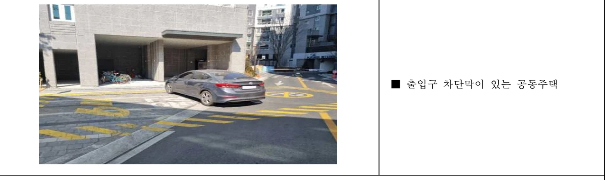

766. 根据《消防基本法》，下列关于消防机动车专用区域的说明中正确的两项是？

- ①设置在公共住宅，以确保消防工作顺利进行。
- ②任何人都不得作出妨碍行为，如在专用区域停车，或阻挡驶入专用区域。
- ③公共住宅的业主必须在每栋建筑至少设置一处，不得例外。
- ④如照片所示停车时，将征收罚款。
- ⑤清除或损毁专用区域标志的行为不属于妨碍专用区域的行为。
查看答案
答案
③ 公共住宅的业主必须在每栋建筑至少设置一处，不得例外。
⑤ 清除或损毁专用区域标志的行为不属于妨碍专用区域的行为。
依据
ⓛ,② 消防基本法第 21-2 条（消防车专用区域等） ③ 消防基本法施行令第 7-13 条（消防车专用区域的设置标准和方法） ④ 消防基本法施行令第 19 条（罚款标准） 附件 3 ⑤ 施行令第 7-14 条消防框架法（专属区破坏标准）
依据文字为学习用机器翻译。